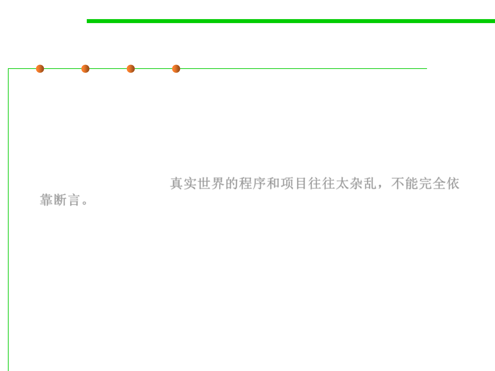

7.3 Assertions and Defensive Programming
Combine assert and error handling for robustness
▪ For highly robust code, assert, and then handle the error anyway
– For any given error condition a routine will generally use either an
assertion or error-handling code, but not both. Some experts argue that
only one kind is needed (Meyer 1997).
▪ But real-world programs and projects tend to be too messy to rely
solely on assertions. 真实世界的程序和项目往往太杂乱，不能完全依
靠断言。
– On a large, long-lasting system, different parts might be designed by
different designers over a period of 5-10 years or more. The designers will
be separated in time, across numerous versions, and separated
geographically. Their designs will focus on different technologies at
different points in the system’s development.
– Programmers will have worked to different coding standards at different
points in the system’s lifetime. On a large development team, some
programmers will inevitably be more conscientious than others and some
parts of the code will be reviewed more rigorously than other parts of the
code.